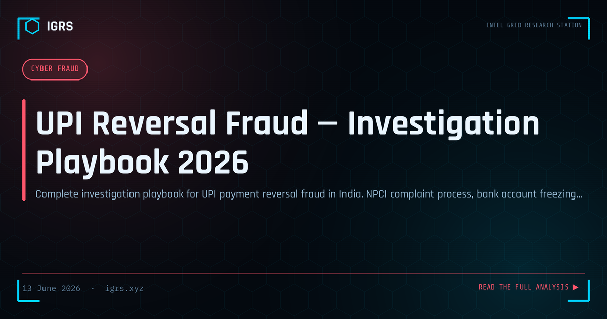

UPI Reversal Fraud — Investigation Playbook 2026
Understanding UPI Reversal Fraud
UPI reversal fraud is a deceptively simple yet highly effective scam sweeping across India. The fraudster sends money to a victim's account — or appears to — then claims it was a mistake and pressures the victim to return it. The "refund" is engineered so that the victim ends up paying the scammer while believing they are simply correcting an error. This investigation playbook breaks down how the scam works, how to trace it, and how to build a recoverable case.
How the Reversal Scam Operates
The mechanics exploit confusion around UPI's collect-request feature:
- The hook: The victim receives money or a convincing payment notification, supposedly sent "by mistake"
- The pressure: The fraudster urgently demands the money back, often impersonating a distressed individual
- The trap: Instead of a genuine refund, the fraudster sends a collect request that debits the victim's account when approved
- The loss: The victim, believing they are returning money, actually pays the scammer — sometimes more than the original amount
In some variants, the original "credit" is a forged notification or a transaction that is itself reversed, so the victim's genuine refund is pure loss.
The Investigation Starting Point: UTR and VPA
Every UPI transaction in the scam generates a UTR number and involves Virtual Payment Addresses (VPAs) on both ends. These are the primary forensic handles:
| Data Point | Investigative Value |
|---|---|
| UTR number | Identifies exact transaction, beneficiary, timestamp |
| Fraudster's VPA | PSP identification, name correlation |
| Beneficiary account | Target for freeze and KYC request |
| Transaction timestamps | Reconstruct the sequence of events |
The Freeze Mechanism and Golden Hour
As with all UPI fraud, speed is decisive. Reporting to 1930 within the first hour allows freeze requests to reach the beneficiary bank before funds are layered through mule accounts. The collect-request nature of reversal fraud means the victim authorised the debit, which complicates but does not prevent recovery — the freeze and investigation focus on the beneficiary account and the money trail.
Mapping the Mule Network
Organised reversal fraud rarely ends at one account. Investigators trace funds through the typical three-layer mule structure: collector accounts where money first lands, buffer accounts that rapidly split and forward funds, and cash-out accounts where money exits via ATM, crypto, or onward transfer. Link analysis of beneficiary statements, obtained via Section 94 BNSS notice, reveals the network and the operators behind it.
NPCI Dispute Resolution
Alongside the criminal route, UPI transactions have a dispute resolution mechanism through NPCI. Victims can raise a dispute via their UPI app or bank, which is processed through the NPCI system. While dispute resolution alone rarely recovers funds in deliberate fraud, it creates an official record and can support the broader investigation and recovery effort.
Device and Phone Intelligence
Attribution in reversal fraud relies on device and phone data:
- TAFCOP lookup on the mule's number to check Aadhaar-linked SIMs
- CDR analysis to map the fraudster's contact network
- Bank device logs showing the same device across multiple mule accounts
- VPA pattern analysis revealing the PSP and embedded identifiers
Applicable Legal Sections
| Section | Act | Offence |
|---|---|---|
| Section 318 | BNS 2023 | Cheating |
| Section 66C | IT Act 2000 | Identity theft |
| Section 66D | IT Act 2000 | Personation using computer |
| Sections 3 & 4 | PMLA 2002 | Money laundering (organised rings) |
Building a Court-Ready Case
All electronic evidence — transaction records, VPA data, device logs, chat communications — must carry a Section 63 BSA 2023 certificate and SHA-256 hash values computed at collection. Document the freeze timeline, legal notices served, and complete money-trail analysis. A reversal fraud case succeeds in court when the technical tracing is matched by disciplined evidence handling that proves both the deception and the money flow.
Prevention and Public Awareness
The core advisory that defeats reversal fraud is simple: you never need to approve a collect request to receive or refund money — a genuine refund is something you initiate, not something you approve. If someone claims they sent money by mistake, verify the credit in your own bank app first, and refund only through a fresh payment you control, never by approving a request they send. This single piece of awareness neutralises the entire scam.